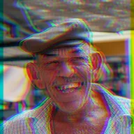

RGB 분리

빨강, 초록, 파랑 채널을 분리합니다. 중심 채널은 그대로 두고 나머지 두 채널은 각도 방향으로 서로 반대로 이동합니다. 밝게는 이동한 색을 더하고, 어둡게는 단색으로 유지하며, 마스크는 세 채널이 모두 겹친 곳만 남기고, 루마는 가장자리를 밝기만큼 불투명하게 만듭니다.
RGB 분리는 빨강, 초록, 파랑 채널을 서로 떼어 놓습니다. 색 테두리가 생기는 렌즈처럼요. 강도는 얼마나 멀리 움직이는지, 각도는 방향입니다. 중심는 제자리에 머무는 채널이고, 모드는 이동한 채널들을 어떻게 합칠지 정합니다. 라이트는 더하고, 다크는 겹친 부분을 진하게 유지하고, 마스크는 세 채널이 모두 겹친 곳만 남기고, 루마는 밝은 만큼 테두리를 불투명하게 만듭니다.
설정
| 설정 | 유형 | 범위 | 기본값 |
|---|---|---|---|
| 강도 | 숫자 | -8~8 | 0.15 |
| 각도 | 각도 | -3600°~3600° | 0° |
| 중심 | 선택지 | R, G, B | G |
| 모드 | 선택지 | 밝게, 어둡게, 마스크, 루마 | 밝게 |